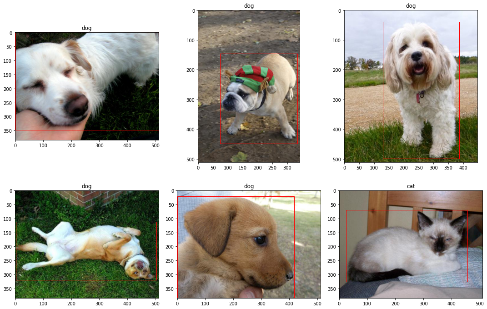
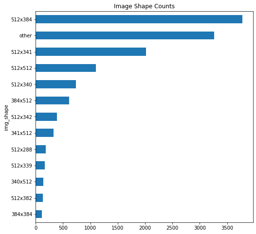
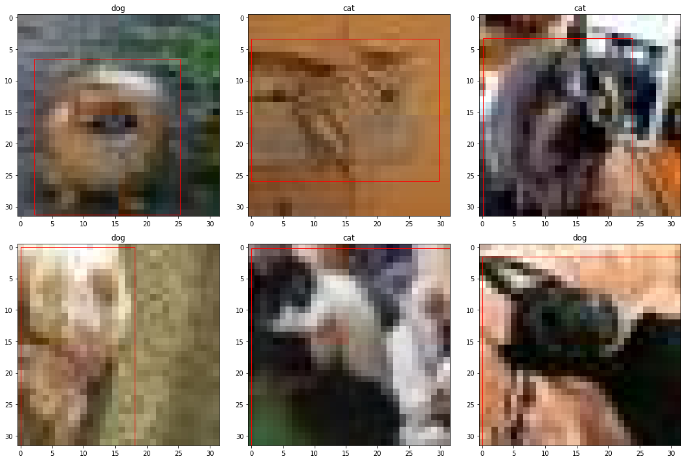
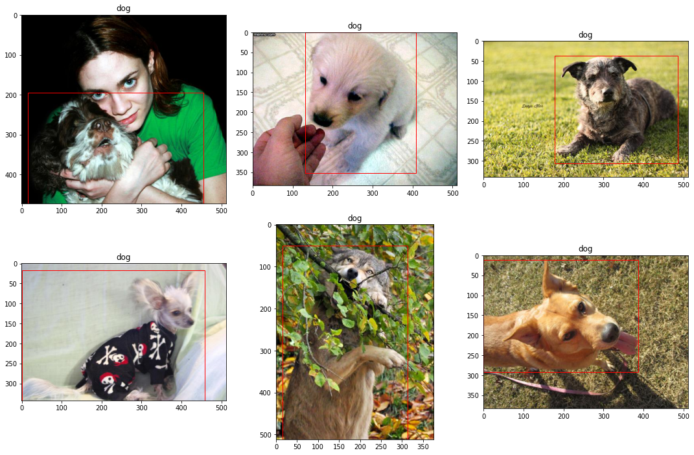
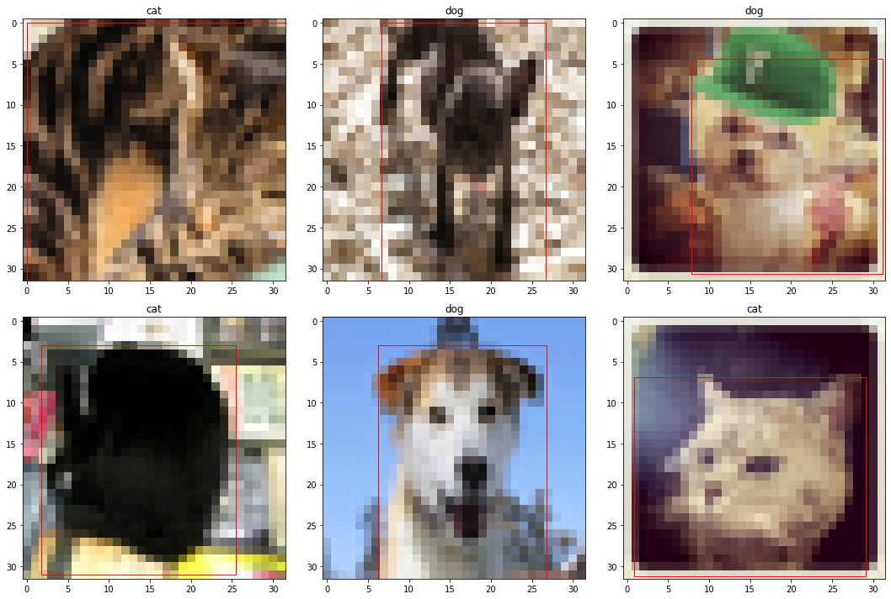

df.LabelName.value_counts().plot(kind='bar')
plt.title('Image Class Count')
plt.show()
###Cats vs Dogs Detector (CaDoD)
Traning Data - This contains about images of cats and dogs in jpg format. The images are of various resolution and are RGB scale.
Test Data - Test data contains images of cats and dogs.
####Data preprocessing
The image archive cadod.tar.gz is a subset Open Images V6. It contains a total of 12,966 images of dogs and cats.
Image bounding boxes are stored in the csv file cadod.csv. The following describes whats contained inside the csv.
The attributes have the following definitions:
from collections import Counter
import glob
import matplotlib.image as mpimg
import matplotlib.pyplot as plt
import numpy as np
import os
import pandas as pd
from PIL import Image
from sklearn.exceptions import ConvergenceWarning
from sklearn.linear_model import SGDClassifier, SGDRegressor
from sklearn.metrics import accuracy_score, mean_squared_error, roc_auc_score
from sklearn.model_selection import train_test_split
import tarfile
from tqdm.notebook import tqdm
import warnings
warnings.filterwarnings('ignore')
from google.colab import drive,files
drive.mount('/content/gdrive')
# Google collab dir: Account: kikarand@iu.edu
DATA_DIR="gdrive/MyDrive/data/"
extract_path = 'images/'
image_file_name = 'cadod.tar.gz'
bounding_box_file_name = 'cadod.csv'
image_path = os.path.join(DATA_DIR, image_file_name)
bounding_box_path = os.path.join(DATA_DIR, bounding_box_file_name)Drive already mounted at /content/gdrive; to attempt to forcibly remount, call drive.mount("/content/gdrive", force_remount=True).
extract_path = 'images/'
image_file_name = 'cadod.tar.gz'
bounding_box_file_name = 'cadod.csv'
image_path = os.path.join(DATA_DIR, image_file_name)
bounding_box_path = os.path.join(DATA_DIR, bounding_box_file_name)
resize_path = os.path.join(extract_path, "resized")!mkdir -p $resize_pathdef extract_tar(file, path):
"""
function to extract tar.gz files to specified location
Args:
file (str): path where the file is located
path (str): path where you want to extract
"""
with tarfile.open(file) as tar:
files_extracted = 0
for member in tqdm(tar.getmembers()):
if os.path.isfile(path + member.name[1:]):
continue
else:
tar.extract(member, path)
files_extracted += 1
tar.close()
if files_extracted < 3:
print('Files already exist')extract_tar(image_path, extract_path){"version_major":2,"version_minor":0,"model_id":"ce04ff6c1c334435b00b62936f6c0ebc"}df = pd.read_csv(bounding_box_path)df.head()| ImageID | Source | LabelName | Confidence | XMin | XMax | YMin | YMax | IsOccluded | IsTruncated | ... | IsDepiction | IsInside | XClick1X | XClick2X | XClick3X | XClick4X | XClick1Y | XClick2Y | XClick3Y | XClick4Y | |
|---|---|---|---|---|---|---|---|---|---|---|---|---|---|---|---|---|---|---|---|---|---|
| 0 | 0000b9fcba019d36 | xclick | /m/0bt9lr | 1 | 0.165000 | 0.903750 | 0.268333 | 0.998333 | 1 | 1 | ... | 0 | 0 | 0.636250 | 0.903750 | 0.748750 | 0.165000 | 0.268333 | 0.506667 | 0.998333 | 0.661667 |
| 1 | 0000cb13febe0138 | xclick | /m/0bt9lr | 1 | 0.000000 | 0.651875 | 0.000000 | 0.999062 | 1 | 1 | ... | 0 | 0 | 0.312500 | 0.000000 | 0.317500 | 0.651875 | 0.000000 | 0.410882 | 0.999062 | 0.999062 |
| 2 | 0005a9520eb22c19 | xclick | /m/0bt9lr | 1 | 0.094167 | 0.611667 | 0.055626 | 0.998736 | 1 | 1 | ... | 0 | 0 | 0.487500 | 0.611667 | 0.243333 | 0.094167 | 0.055626 | 0.226296 | 0.998736 | 0.305942 |
| 3 | 0006303f02219b07 | xclick | /m/0bt9lr | 1 | 0.000000 | 0.999219 | 0.000000 | 0.998824 | 1 | 1 | ... | 0 | 0 | 0.508594 | 0.999219 | 0.000000 | 0.478906 | 0.000000 | 0.375294 | 0.720000 | 0.998824 |
| 4 | 00064d23bf997652 | xclick | /m/0bt9lr | 1 | 0.240938 | 0.906183 | 0.000000 | 0.694286 | 0 | 0 | ... | 0 | 0 | 0.678038 | 0.906183 | 0.240938 | 0.522388 | 0.000000 | 0.370000 | 0.424286 | 0.694286 |
5 rows × 21 columns
print(f"There are a total of {len(glob.glob1(path, '*.jpg'))} images")There are a total of 12966 images
print(f"The total size is {os.path.getsize(path)/1000} MB")The total size is 1077.248 MB
df.shape(12966, 21)Replace LabelName with human readable labels
df.LabelName.replace({'/m/01yrx':'cat', '/m/0bt9lr':'dog'}, inplace=True)df.LabelName.value_counts()dog 6855
cat 6111
Name: LabelName, dtype: int64df.LabelName.value_counts().plot(kind='bar')
plt.title('Image Class Count')
plt.show()
df.describe()| Confidence | XMin | XMax | YMin | YMax | IsOccluded | IsTruncated | IsGroupOf | IsDepiction | IsInside | XClick1X | XClick2X | XClick3X | XClick4X | XClick1Y | XClick2Y | XClick3Y | XClick4Y | |
|---|---|---|---|---|---|---|---|---|---|---|---|---|---|---|---|---|---|---|
| count | 12966.0 | 12966.000000 | 12966.000000 | 12966.000000 | 12966.000000 | 12966.000000 | 12966.000000 | 12966.000000 | 12966.000000 | 12966.000000 | 12966.000000 | 12966.000000 | 12966.000000 | 12966.000000 | 12966.000000 | 12966.000000 | 12966.000000 | 12966.000000 |
| mean | 1.0 | 0.099437 | 0.901750 | 0.088877 | 0.945022 | 0.464754 | 0.738470 | 0.013651 | 0.045427 | 0.001157 | 0.390356 | 0.424582 | 0.494143 | 0.506689 | 0.275434 | 0.447448 | 0.641749 | 0.582910 |
| std | 0.0 | 0.113023 | 0.111468 | 0.097345 | 0.081500 | 0.499239 | 0.440011 | 0.118019 | 0.209354 | 0.040229 | 0.358313 | 0.441751 | 0.405033 | 0.462281 | 0.415511 | 0.401580 | 0.448054 | 0.403454 |
| min | 1.0 | 0.000000 | 0.408125 | 0.000000 | 0.451389 | -1.000000 | -1.000000 | -1.000000 | -1.000000 | -1.000000 | -1.000000 | -1.000000 | -1.000000 | -1.000000 | -1.000000 | -1.000000 | -1.000000 | -1.000000 |
| 25% | 1.0 | 0.000000 | 0.830625 | 0.000000 | 0.910000 | 0.000000 | 0.000000 | 0.000000 | 0.000000 | 0.000000 | 0.221292 | 0.096875 | 0.285071 | 0.130000 | 0.024323 | 0.218333 | 0.405816 | 0.400000 |
| 50% | 1.0 | 0.061250 | 0.941682 | 0.059695 | 0.996875 | 0.000000 | 1.000000 | 0.000000 | 0.000000 | 0.000000 | 0.435625 | 0.415625 | 0.531919 | 0.623437 | 0.146319 | 0.480838 | 0.825000 | 0.646667 |
| 75% | 1.0 | 0.167500 | 0.998889 | 0.144853 | 0.999062 | 1.000000 | 1.000000 | 0.000000 | 0.000000 | 0.000000 | 0.609995 | 0.820000 | 0.787500 | 0.917529 | 0.561323 | 0.729069 | 0.998042 | 0.882500 |
| max | 1.0 | 0.592500 | 1.000000 | 0.587088 | 1.000000 | 1.000000 | 1.000000 | 1.000000 | 1.000000 | 1.000000 | 0.999375 | 0.999375 | 1.000000 | 0.999375 | 0.999375 | 0.999375 | 1.000000 | 0.999375 |
# plot random 6 images
fig, ax = plt.subplots(nrows=2, ncols=3, sharex=False, sharey=False,figsize=(15,10))
ax = ax.flatten()
for i,j in enumerate(np.random.choice(df.shape[0], size=6, replace=False)):
img = mpimg.imread(path + df.ImageID.values[j] + '.jpg')
h, w = img.shape[:2]
coords = df.iloc[j,4:8]
ax[i].imshow(img)
ax[i].set_title(df.LabelName[j])
ax[i].add_patch(plt.Rectangle((coords[0]*w, coords[2]*h),
coords[1]*w-coords[0]*w, coords[3]*h-coords[2]*h,
edgecolor='red', facecolor='none'))
plt.tight_layout()
plt.show()
Go through all images and record the shape of the image in pixels and the memory size
img_shape = []
img_size = np.zeros((df.shape[0], 1))
for i,f in enumerate(tqdm(glob.glob1(path, '*.jpg'))):
file = path+'/'+f
img = Image.open(file)
img_shape.append(f"{img.size[0]}x{img.size[1]}")
img_size[i] += os.path.getsize(file){"version_major":2,"version_minor":0,"model_id":"50c6f45470994f83a9dd8254cdf9593b"}Count all the different image shapes
img_shape_count = Counter(img_shape)# create a dataframe for image shapes
img_df = pd.DataFrame(set(img_shape_count.items()), columns=['img_shape','img_count'])img_df.shape(594, 2)There are a ton of different image shapes. Let's narrow this down by getting a sum of any image shape that has a cout less than 100 and put that in a category called other
img_df = img_df.append({'img_shape': 'other','img_count': img_df[img_df.img_count < 100].img_count.sum()},
ignore_index=True)Drop all image shapes
img_df = img_df[img_df.img_count >= 100]Check if the count sum matches the number of images
img_df.img_count.sum() == df.shape[0]TruePlot
img_df.sort_values('img_count', inplace=True)
img_df.plot(x='img_shape', y='img_count', kind='barh', figsize=(8,8), legend=False)
plt.title('Image Shape Counts')
plt.show()
# convert to megabytes
img_size = img_size / 1000fig, ax = plt.subplots(1, 2, figsize=(15,5))
fig.suptitle('Image Size Distribution')
ax[0].hist(img_size, bins=50)
ax[0].set_title('Histogram')
ax[0].set_xlabel('Image Size (MB)')
ax[1].boxplot(img_size, vert=False, widths=0.5)
ax[1].set_title('Boxplot')
ax[1].set_xlabel('Image Size (MB)')
ax[1].set_ylabel('Images')
plt.show()
import os
import glob
files = glob.glob(f'{resize_path}/*')
for f in files:
os.remove(f)%%time
# resize image and save, convert to numpy
img_arr = np.zeros((df.shape[0],32*32*3)) # initialize np.array
for i, f in enumerate(tqdm(df.ImageID)):
img = Image.open(extract_path+f+'.jpg')
img_resized = img.resize((32,32))
img_resized.save(os.path.join(resize_path,f"{f}.jpg"), "JPEG", optimize=True)
img_arr[i] = np.asarray(img_resized, dtype=np.uint8).flatten(){"version_major":2,"version_minor":0,"model_id":"ac871daf03b04ce2929b234f5cb78b12"}CPU times: user 1min 4s, sys: 2.21 s, total: 1min 6s
Wall time: 1min 7s
print(len(img_arr[0]))3072
Plot the resized and filtered images
# plot random 6 images
fig, ax = plt.subplots(nrows=2, ncols=3, sharex=False, sharey=False,figsize=(15,10))
ax = ax.flatten()
for i,j in enumerate(np.random.choice(df.shape[0], size=6, replace=False)):
img = mpimg.imread(f"{resize_path}/"+df.ImageID.values[j]+'.jpg')
h, w = img.shape[:2]
coords = df.iloc[j,4:8]
ax[i].imshow(img)
ax[i].set_title(df.iloc[j,2])
ax[i].add_patch(plt.Rectangle((coords[0]*w, coords[2]*h),
coords[1]*w-coords[0]*w, coords[3]*h-coords[2]*h,
edgecolor='red', facecolor='none'))
plt.tight_layout()
plt.show()
# encode labels
df['Label'] = (df.LabelName == 'dog').astype(np.uint8)# plot first 6 images
fig, ax = plt.subplots(nrows=2, ncols=3, sharex=False, sharey=False,figsize=(15,10))
ax = ax.flatten()
for i,j in enumerate(df.index[5584:5590].to_numpy()):
img = mpimg.imread(extract_path + df.ImageID.values[j] + '.jpg')
h, w = img.shape[:2]
coords = df.iloc[j,4:8]
ax[i].imshow(img)
ax[i].set_title(df.LabelName[j])
ax[i].add_patch(plt.Rectangle((coords[0]*w, coords[2]*h),
coords[1]*w-coords[0]*w, coords[3]*h-coords[2]*h,
edgecolor='red', facecolor='none'))
plt.tight_layout()
plt.show()
mkdir -p \datanp.save('data/img.npy', img_arr.astype(np.uint8))
np.save('data/y_label.npy', df.Label.values)
np.save('data/y_bbox.npy', df[['XMin', 'YMin', 'XMax', 'YMax']].values.astype(np.float32))X = np.load('data/img.npy', allow_pickle=True)
y_label = np.load('data/y_label.npy', allow_pickle=True)
y_bbox = np.load('data/y_bbox.npy', allow_pickle=True)idx_to_label = {1:'dog', 0:'cat'} # encoderDouble check that it loaded correctly
# plot random 6 images
fig, ax = plt.subplots(nrows=2, ncols=3, sharex=False, sharey=False,figsize=(15,10))
ax = ax.flatten()
for i,j in enumerate(np.random.choice(X.shape[0], size=6, replace=False)):
coords = y_bbox[j] * 32
ax[i].imshow(X[j].reshape(32,32,3))
ax[i].set_title(idx_to_label[y_label[j]])
ax[i].add_patch(plt.Rectangle((coords[0], coords[1]),
coords[2]-coords[0], coords[3]-coords[1],
edgecolor='red', facecolor='none'))
plt.tight_layout()
plt.show()
Create training and testing sets
X_train, X_test, y_train, y_test_label = train_test_split(X, y_label, test_size=0.01, random_state=27)I'm choosing SGDClassifier because the data is large and I want to be able to perform stochastic gradient descent and also its ability to early stop. With this many parameters, a model can easily overfit so it's important to try and find the point of where it begins to overfit and stop for optimal results.
%%time
model = SGDClassifier(loss='log', n_jobs=-1, random_state=27, learning_rate='adaptive', eta0=1e-10,
early_stopping=True, validation_fraction=0.1, n_iter_no_change=3)
# 0.2 validation TODO
model.fit(X_train, y_train)CPU times: user 1.11 s, sys: 509 ms, total: 1.62 s
Wall time: 1.2 s
model.n_iter_4Did it stop too early? Let's retrain with a few more iterations to see. Note that SGDClassifier has a parameter called validation_fraction which splits a validation set from the training data to determine when it stops.
X_train, X_valid, y_train, y_valid = train_test_split(X_train, y_train, test_size=0.1, random_state=27)model2 = SGDClassifier(loss='log', n_jobs=-1, random_state=27, learning_rate='adaptive', eta0=1e-10)
epochs = 30
train_acc = np.zeros(epochs)
valid_acc = np.zeros(epochs)
for i in tqdm(range(epochs)):
model2.partial_fit(X_train, y_train, np.unique(y_train))
#log
train_acc[i] += np.round(accuracy_score(y_train, model2.predict(X_train)),3)
valid_acc[i] += np.round(accuracy_score(y_valid, model2.predict(X_valid)),3){"version_major":2,"version_minor":0,"model_id":"eb902c9b6a4448a8bc40b9d797a608db"}plt.plot(train_acc, label='train')
plt.plot(valid_acc, label='valid')
plt.title('CaDoD Training')
plt.xlabel('Epochs')
plt.ylabel('Accuracy')
plt.legend()
plt.show()
del model2expLog = pd.DataFrame(columns=["exp_name",
"Train Acc",
"Valid Acc",
"Test Acc",
"Train MSE",
"Valid MSE",
"Test MSE",
])exp_name = f"Baseline: Linear Model"
expLog.loc[0,:4] = [f"{exp_name}"] + list(np.round(
[accuracy_score(y_train, model.predict(X_train)),
accuracy_score(y_valid, model.predict(X_valid)),
accuracy_score(y_test_label, model.predict(X_test))],3))expLog| exp_name | Train Acc | Valid Acc | Test Acc | Train MSE | Valid MSE | Test MSE | |
|---|---|---|---|---|---|---|---|
| 0 | Baseline: Linear Model | 0.565 | 0.557 | 0.615 | NaN | NaN | NaN |
y_pred_label = model.predict(X_test)
y_pred_label_proba = model.predict_proba(X_test)
fig, ax = plt.subplots(nrows=2, ncols=5, sharex=False, sharey=False,figsize=(15,6))
ax = ax.flatten()
for i in range(10):
img = X_test[i].reshape(32,32,3)
ax[i].imshow(img)
ax[i].set_title("Ground Truth: {0} \n Prediction: {1} | {2:.2f}".format(idx_to_label[y_test_label[i]],
idx_to_label[y_pred_label[i]],
y_pred_label_proba[i][y_pred_label[i]]),
color=("green" if y_pred_label[i]==y_test_label[i] else "red"))
plt.tight_layout()
plt.show()
# imports
import warnings
warnings.simplefilter('ignore')
import numpy as np
import pandas as pd
import seaborn as sns
import matplotlib.pyplot as plt
%matplotlib inline
import re
from time import time
from scipy import stats
import json
from sklearn.base import BaseEstimator, TransformerMixin
from sklearn.model_selection import train_test_split
from sklearn.pipeline import Pipeline
from sklearn.impute import SimpleImputer
from sklearn.preprocessing import StandardScaler
from sklearn.preprocessing import OneHotEncoder
from sklearn.model_selection import ShuffleSplit
from sklearn.model_selection import cross_val_score
from sklearn.model_selection import GridSearchCV
from sklearn.linear_model import LogisticRegression
from sklearn.neighbors import KNeighborsClassifier
from sklearn.naive_bayes import GaussianNB
from sklearn.svm import SVC
from sklearn.linear_model import SGDClassifier
from sklearn.ensemble import RandomForestClassifierd1 = []
for i1 in img_arr:
d1.append(i1)
temp_image_data=[]
for i in range(0,len(df)):
temp_image_data.append(pd.Series(data = d1).iloc[i])len(temp_image_data)
len(img_arr[0])3072X_train, X_test, y_train, y_test = train_test_split(np.array(temp_image_data), y_bbox, test_size=0.01, random_state=27)
X_train, X_valid, y_train, y_valid = train_test_split(X_train, y_train, test_size=0.1, random_state=27)%%time
from sklearn.linear_model import LinearRegression
# TODO closed loop solution, could use Lasso Ridge
model = LinearRegression() #fill in
model.fit(X_train, y_train)
# might take a few minutes to train
#CPU times: user 1h 26min 40s, sys: 5min 53s, total: 1h 32min 34s
#Wall time: 17min 24sCPU times: user 41.3 s, sys: 3.98 s, total: 45.3 s
Wall time: 28.4 s
expLog.iloc[0,4:] = list(np.round([mean_squared_error(y_train, model.predict(X_train)),
mean_squared_error(y_valid, model.predict(X_valid)),
mean_squared_error(y_test, model.predict(X_test))],3))
expLog| exp_name | Train Acc | Valid Acc | Test Acc | Train MSE | Valid MSE | Test MSE | |
|---|---|---|---|---|---|---|---|
| 0 | Baseline: Linear Model | 0.565 | 0.557 | 0.615 | 0.007 | 0.015 | 0.015 |
# The below code is refered from Hw5
from sklearn.linear_model import Ridge
from sklearn.linear_model import Lasso
from sklearn.model_selection import GridSearchCV
np.random.seed(42)
estimators = [('ridge', Ridge()),
('lasso', Lasso())]
best_score = []
best_param = []
for estimator in estimators:
params = {estimator[0]+'__alpha':[.01, .05, .1, .5, 1, 5]}
# set up the pipeline using the standard scaler and estimator
# and grid search with pipeline, params,
# and correct scoring parameter (scoring parameter has to be a utility- where bigger is better
# such as neg_mean_squared_error, explained_variance etc. )
# for more information see the following -
# https://scikit-learn.org/stable/modules/model_evaluation.html#scoring-parameter
# Please use neg_mean_squared_error here.
#==================================================#
# Your code starts here #
#==================================================#
# TODO - change above to
pipe = Pipeline([('scalar', StandardScaler()), estimator])
gs = GridSearchCV(pipe, params, scoring='neg_mean_squared_error',cv=5)
#==================================================#
# Your code ends here #
#==================================================#
gs.fit(X_train, y_train)
best_score.append(gs.best_score_)
best_param.append(gs.best_params_)
best_idx = np.argmax(best_score)
print('Best model is:', estimators[best_idx][0], 'with parameter', best_param[best_idx])Best model is: lasso with parameter {'lasso__alpha': 0.01}
list(best_param[best_idx].values())[0]0.01#estimator = estimators[best_idx][0], list(best_param[best_idx].values())[0])
estimator = [Ridge, Lasso][best_idx]
param = list(gs.best_params_.values())[0]
print (param)
# set up the pipeline using the best estimator
pipe = Pipeline([('scalar', StandardScaler()), ('estimator', estimator(alpha=param))])
pipe.fit(X_train, y_train)0.01
Pipeline(steps=[('scalar', StandardScaler()), ('estimator', Lasso(alpha=0.01))])exp_name = f"Linear Regression(best regularization and alpha)"
expLog.loc[1,:4] = [f"{exp_name}"] +list(np.round([0,
0,
0],3))
expLog.loc[1,4:] = list(np.round([mean_squared_error(y_train, pipe.predict(X_train)),
mean_squared_error(y_valid, pipe.predict(X_valid)),
mean_squared_error(y_test, pipe.predict(X_test))],3))
expLog| exp_name | Train Acc | Valid Acc | Test Acc | Train MSE | Valid MSE | Test MSE | |
|---|---|---|---|---|---|---|---|
| 0 | Baseline: Linear Model | 0.565 | 0.557 | 0.615 | 0.007 | 0.015 | 0.015 |
| 1 | Linear Regression(best regularization and alpha) | 0 | 0 | 0 | 0.01 | 0.011 | 0.009 |
# Below code is refered from HW13, Hw7,Hw2
import numpy as np
from sklearn.model_selection import train_test_split, GridSearchCV, PredefinedSplit
X = np.load('data/img.npy', allow_pickle=True)
y_label = np.load('data/y_label.npy', allow_pickle=True)
y_bbox = np.load('data/y_bbox.npy', allow_pickle=True)
idx_to_label = {1:'dog', 0:'cat'}
X_train_class, X_test_class, y_train_label, y_test_label = train_test_split(X, y_label, stratify=y_label, shuffle=True, test_size=0.50, random_state=27)
np.random.seed(42)
X = X.astype(np.float32) / 255.
y_label=y_label.astype(int)
X_train_class, X_test_class, y_train_label, y_test_label = train_test_split(X, y_label, stratify=y_label, shuffle=True, test_size=0.20, random_state=27)
X_train_full = X_train_class
y_train_full = y_train_label
X_test_full = X_test_class
y_test_full = y_test_label
X_train, _, y_train, _ = train_test_split(X_train_class, y_train_label, stratify=y_train_label, train_size=0.1, random_state=42)
X_test, _, y_test, _ = train_test_split(X_test_class, y_test_label, stratify=y_test_label, train_size=0.1, random_state=42)# use full pipeline above to build full pipeline with predictor
np.random.seed(42)
full_pipeline_with_predictor = Pipeline([
("linear", LogisticRegression(random_state=42))
])
full_pipeline_with_predictor.fit(X_train, y_train)Pipeline(steps=[('linear', LogisticRegression(random_state=42))])start = time()
full_pipeline_with_predictor.fit(X_train, y_train)
np.random.seed(42)
# Set up cross validation scores
# Use ShuffleSplit() with 30 splits, 30% test_size
# and a random seed of 0
#==================================================#
# Your code starts here #
#==================================================#
cv3Splits = ShuffleSplit(n_splits=3, random_state=0, test_size=0.30, train_size=None)
logit_scores = cross_val_score(full_pipeline_with_predictor, X_train, y_train, cv=cv3Splits)
#==================================================#
# Your code ends here #
# Please don't add code below here #
#==================================================#
logit_score_train = logit_scores.mean()
train_time = np.round(time() - start, 4)
# Time and score test predictions
start = time()
logit_score_test = full_pipeline_with_predictor.score(X_test, y_test)
test_time = np.round(time() - start, 4)results = pd.DataFrame(columns=["Expname", "Train accuracy", "Test Accuracy"])
results.loc[0] = ["Baseline", np.round(100*logit_score_train,1), np.round(np.round(100*logit_score_test,1),3)]
results| Expname | Train accuracy | Test Accuracy | |
|---|---|---|---|
| 0 | Baseline | 54.0 | 55.2 |
from sklearn.tree import DecisionTreeClassifier
from sklearn.ensemble import RandomForestClassifier
# A Function to execute the grid search and record the results.
def ConductGridSearch(X_train, y_train, X_test, y_test, i=0, prefix='', n_jobs=-1,verbose=1):
# Create a list of classifiers for our grid search experiment
classifiers = [
('Logistic Regression', LogisticRegression(random_state=42)),
('K-Nearest Neighbors', KNeighborsClassifier()),
('Naive Bayes', GaussianNB()),
('Support Vector', SVC(random_state=42)),
('Stochastic GD', SGDClassifier(loss='log',
penalty='l2',
early_stopping=True,
max_iter=10000, tol=1e-5,
random_state=42)),
]
# Arrange grid search parameters for each classifier
params_grid = {
'Logistic Regression': {
'penalty': ('l1', 'l2'),
'tol': (0.0001, 0.00001, 0.0000001),
'C': (10, 1, 0.1, 0.01),
},
'K-Nearest Neighbors': {
'n_neighbors': (3, 5, 7, 8, 11),
'p': (1,2),
},
'Naive Bayes': {},
'Support Vector' : {
'kernel': ('rbf', 'poly'),
'degree': (1, 2, 3, 4, 5),
'C': (10, 1, 0.1, 0.01),
},
'Stochastic GD': {
'tol': (0.0001, 0.0000001),
'alpha': (0.1, 0.001, 0.0001),
}
}
for (name, classifier) in classifiers:
i += 1
# Print classifier and parameters
print('****** START',prefix, name,'*****')
parameters = params_grid[name]
print("Parameters:")
for p in sorted(parameters.keys()):
print("\t"+str(p)+": "+ str(parameters[p]))
# generate the pipeline
full_pipeline_with_predictor = Pipeline([
("predictor", classifier)
])
# Execute the grid search
params = {}
for p in parameters.keys():
pipe_key = 'predictor__'+str(p)
params[pipe_key] = parameters[p]
grid_search = GridSearchCV(full_pipeline_with_predictor, params, scoring='accuracy', cv=5,
n_jobs=n_jobs, verbose=verbose)
grid_search.fit(X_train, y_train)
# Best estimator score
best_train = np.round(100*grid_search.best_score_,1)
# Best estimator fitting time
start = time()
grid_search.best_estimator_.fit(X_train, y_train)
train_time = round(time() - start, 4)
# # plt.barh(['Age', 'Parch', 'SibSp','Fare','x0_C' ,'x0_Q' ,'x0_S' ,'x1_female', 'x1_male' ,'x2_1' ,'x2_2', 'x2_3'], grid_search.best_estimator_.named_steps["predictor"].feature_importances_)
# # plt.show()
# features = ['Age', 'Parch', 'SibSp','Fare','x0_C' ,'x0_Q' ,'x0_S' ,'x1_female', 'x1_male' ,'x2_1' ,'x2_2', 'x2_3']
# importances = grid_search.best_estimator_.named_steps["predictor"].feature_importances_
# indices = np.argsort(importances)
# plt.title('Feature Importances')
# plt.barh(range(len(indices)), importances[indices], color='b', align='center')
# plt.yticks(range(len(indices)), [features[i] for i in indices])
# plt.xlabel('Relative Importance')
# plt.grid()
# plt.show();
# Best estimator prediction time
start = time()
best_test_accuracy = np.round(100*grid_search.best_estimator_.score(X_test, y_test),1)
test_time = round(time() - start, 4)
# Generate 30 training accuracy scores with the best estimator and 30-split CV
# To calculate the best_train_accuracy use the pct() and mean() methods
#==================================================#
# Your code starts here #
#==================================================#
best_train_scores = cross_val_score(grid_search.best_estimator_, X_train, y_train, cv=cv3Splits)
best_train_accuracy = np.round(100*best_train_scores.mean(),1)
#==================================================#
# Your code ends here #
# Please don't add code below here #
#==================================================#
# Conduct t-test with baseline logit (control) and best estimator (experiment)
(t_stat, p_value) = stats.ttest_rel(logit_scores, best_train_scores)
# Collect the best parameters found by the grid search
print("Best Parameters:")
best_parameters = grid_search.best_estimator_.get_params()
param_dump = []
for param_name in sorted(params.keys()):
param_dump.append((param_name, best_parameters[param_name]))
print("\t"+str(param_name)+": " + str(best_parameters[param_name]))
print("****** FINISH",prefix,name," *****")
print("")
# Record the results
results.loc[i] = [prefix+name, best_train_accuracy, best_test_accuracy]ConductGridSearch(X_train, y_train, X_test, y_test, 0, "Best Model:", n_jobs=-1,verbose=1)****** START Best Model: Logistic Regression *****
Parameters:
C: (10, 1, 0.1, 0.01)
penalty: ('l1', 'l2')
tol: (0.0001, 1e-05, 1e-07)
Fitting 5 folds for each of 24 candidates, totalling 120 fits
Best Parameters:
predictor__C: 0.01
predictor__penalty: l2
predictor__tol: 0.0001
****** FINISH Best Model: Logistic Regression *****
****** START Best Model: K-Nearest Neighbors *****
Parameters:
n_neighbors: (3, 5, 7, 8, 11)
p: (1, 2)
Fitting 5 folds for each of 10 candidates, totalling 50 fits
Best Parameters:
predictor__n_neighbors: 11
predictor__p: 2
****** FINISH Best Model: K-Nearest Neighbors *****
****** START Best Model: Naive Bayes *****
Parameters:
Fitting 5 folds for each of 1 candidates, totalling 5 fits
Best Parameters:
****** FINISH Best Model: Naive Bayes *****
****** START Best Model: Support Vector *****
Parameters:
C: (10, 1, 0.1, 0.01)
degree: (1, 2, 3, 4, 5)
kernel: ('rbf', 'poly')
Fitting 5 folds for each of 40 candidates, totalling 200 fits
Best Parameters:
predictor__C: 1
predictor__degree: 1
predictor__kernel: poly
****** FINISH Best Model: Support Vector *****
****** START Best Model: Stochastic GD *****
Parameters:
alpha: (0.1, 0.001, 0.0001)
tol: (0.0001, 1e-07)
Fitting 5 folds for each of 6 candidates, totalling 30 fits
Best Parameters:
predictor__alpha: 0.1
predictor__tol: 0.0001
****** FINISH Best Model: Stochastic GD *****
results| Expname | Train accuracy | Test Accuracy | |
|---|---|---|---|
| 0 | Baseline | 54.0 | 55.2 |
| 1 | Best Model:Logistic Regression | 56.9 | 53.3 |
| 2 | Best Model:K-Nearest Neighbors | 53.0 | 56.0 |
| 3 | Best Model:Naive Bayes | 54.0 | 55.2 |
| 4 | Best Model:Support Vector | 56.1 | 52.9 |
| 5 | Best Model:Stochastic GD | 52.9 | 57.9 |
Implement a Homegrown Logistic Regression model. Extend the loss function from CXE to CXE + MSE, i.e., make it a complex multitask loss function the resulting model predicts the class and bounding box coordinates at the same time.
Cats and Dogs Classification is a popular ML problem, which can be solved using various techniques. We performed algorithms like logistic regression, KNN, Naive Baye’s, Support Vector, Stochastic Gradient Descent, to find out how well these algorithms can predict class for the cat and dog image set.
The main challenges was to work with a huge dataset. Hence we decreased image size from 128x128 to 32x32.
In phase 1, we have focused on the SKLearn Baseline models for logistic regression, SGDClassifier to classify the images into cats and dogs and Linear regression for making the bounding boxes around the cats and dogs inside the image. Well, Test Accuracy alone can’t tell how good an algorithm predicts the classes in general on various data set. We hope to experiment more by implementing homegrown logistic regression model and CNN in the next phase.